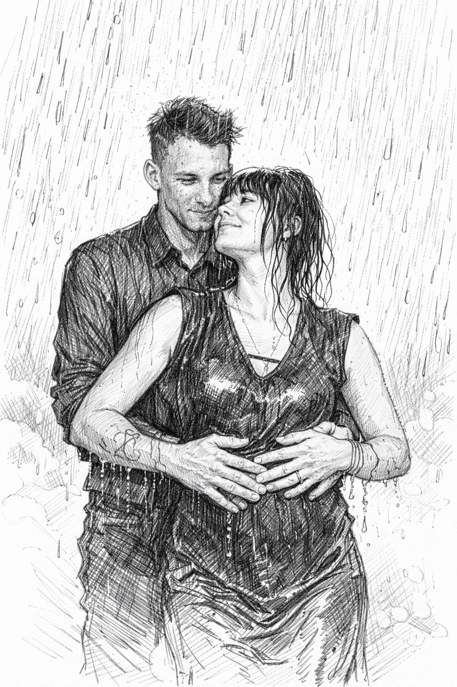
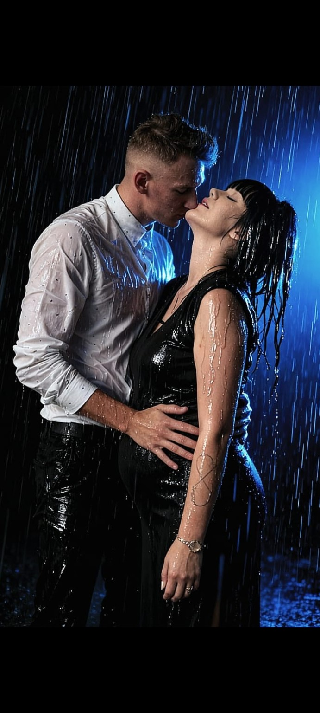
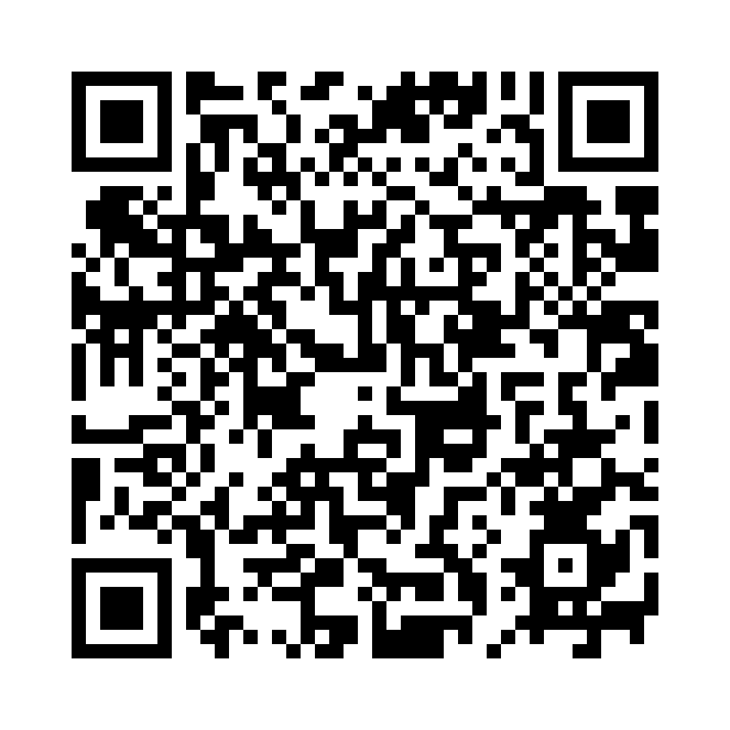

Iwona ❤️ Mateusz
❤️ Od tej chwili wszystko zaczęło mieć znaczenie
Są takie chwile, których nie da się zaplanować ani przewidzieć. Jedna podróż, jedna stacja, 220 kilometrów i spotkanie dwóch osób, które miało zmienić całe życie.
Dla Iwony i Mateusza 14 lutego 2025 roku nie był po prostu kolejnym dniem. To był początek historii, którą warto pamiętać przez całe życie.
Od tamtej chwili zaczęły powstawać wspólne wspomnienia — te wielkie i te zupełnie małe: rozmowy, spojrzenia, uśmiechy, bliskość, wspólne plany i chwile, w których najważniejsze było po prostu być obok siebie.
Bo prawdziwa miłość nie zawsze potrzebuje wielkich słów. Czasami wystarczy obecność jednej osoby, przy której serce wie, że jest dokładnie tam, gdzie powinno.
💕 Wasza miłość
Iwona i Mateusz — dwa różne światy, które pewnego dnia spotkały się i zaczęły tworzyć jeden. To historia o tym, że odległość nie musi dzielić, droga nie musi być przeszkodą, a przypadkowe spotkanie może stać się najważniejszym spotkaniem w życiu.
220 kilometrów przestało być tylko odległością. Stało się symbolem tego, że jeśli naprawdę chce się być przy drugiej osobie, żadna droga nie jest zbyt długa.
🕊️ Początek, który został na zawsze
Jedno miejsce, w którym los postawił na swojej drodze dwoje ludzi.
Droga, która mogła być tylko drogą, a stała się częścią najważniejszej historii.
Dzień, od którego słowo „my” zaczęło znaczyć coś zupełnie wyjątkowego.
Codzienność, marzenia, radości, trudniejsze chwile i wszystkie małe momenty, które budują prawdziwą miłość.
👶 Najpiękniejszy rozdział — Liliana
W pewnym momencie Wasza historia dostała najpiękniejszy możliwy rozdział. Na świecie pojawiła się Liliana. ❤️
Od tego dnia Wasza miłość zyskała jeszcze jedno, wyjątkowe znaczenie. Z historii dwojga ludzi powstała historia rodziny — z małym sercem, które stało się częścią Waszego wspólnego świata.
Liliana jest kolejnym rozdziałem Waszej historii — takim, którego nie da się opisać jednym zdaniem. To codzienne uśmiechy, troska, odpowiedzialność, zmęczenie, radość i chwile, które z czasem stają się najcenniejszymi wspomnieniami.
👨👩👧👦 Ważna część Waszej rodziny
Iwona jest także mamą trojga innych dzieci. Nie są to dzieci Mateusza, ale są ważną częścią życia Iwony i świata, który ją ukształtował.
Każde z nich ma swoje miejsce w tej rodzinnej historii. Miłość nie zawsze oznacza tę samą więź, ale zawsze może oznaczać szacunek, troskę, akceptację i miejsce przy wspólnym stole.
Dlatego ta historia jest większa niż historia tylko dwojga ludzi. To opowieść o bliskości, rodzinie, różnych doświadczeniach i o tym, że można razem budować przyszłość, szanując wszystko to, co było wcześniej.
❤️ Wasza historia w liczbach
📸 Wasze wspomnienia


🎵 Wasza piosenka
„Kamień z napisem LOVE” ❤️
Bo niektóre piosenki po prostu pasują do jednej konkretnej historii.
▶ Posłuchaj piosenki📱 ❤️ Zeskanuj mnie ❤️
Zeskanuj kod QR telefonem, aby otworzyć tę historię.

Iwona ❤️ Mateusz — nasza historia
Na zawsze. ♾️
Niech przed Wami będzie jeszcze mnóstwo kilometrów, wspólnych poranków, wieczorów, śmiechu, wzruszeń i chwil, które kiedyś staną się najpiękniejszymi wspomnieniami.
Iwona ❤️ Mateusz
Jedna historia. Jedna rodzina. Jedno „na zawsze”.